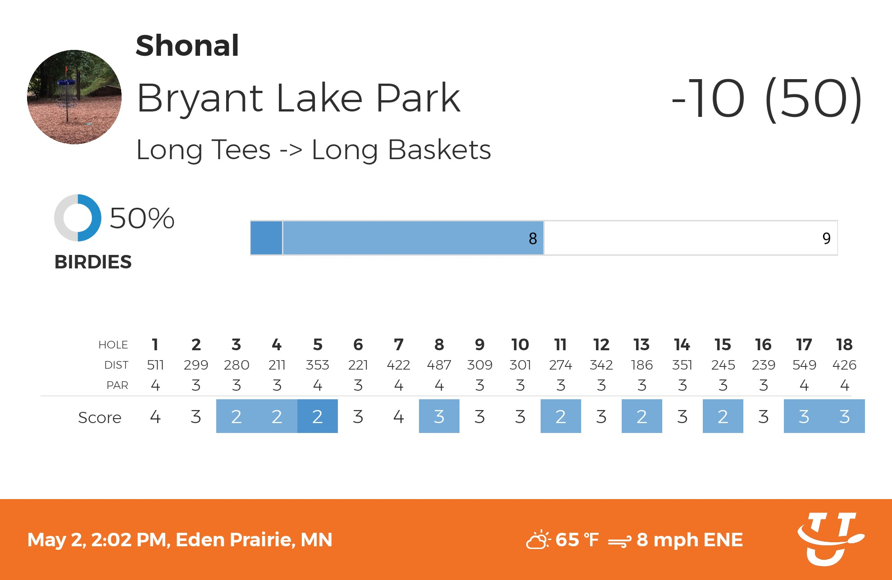
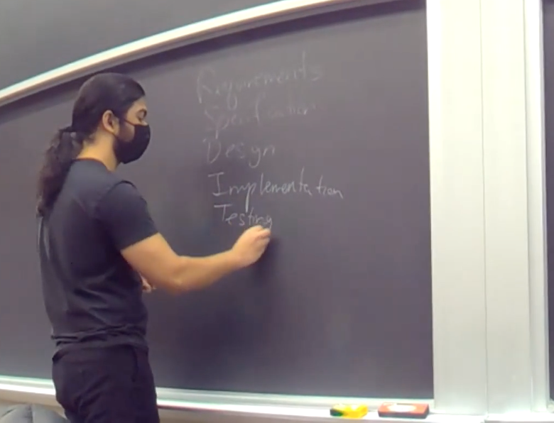

Who Am I?
Hello! I'm Shonal Gangopadhyay, a computer scientist, educator, and enthusiast of many hobbies. This page gives you a glimpse into my education, career, hobbies, and personal life.
Hobbies
Karate
Karate has been a lifelong passion for me. I recently earned my 5th-degree black belt through National Karate, a school specializing in an Americanized style of Tae Kwon Do. At one point, I was the director of a school, but I stepped away to finish my undergraduate and graduate degrees. I still compete regularly and excel in both weapons and empty-hand forms. While I used to spar more often, these days, I primarily focus on teaching. I no longer run a school, but I volunteer at multiple locations, including Albertville, Brooklyn Park, Eden Prairie, and Apple Valley National Karate.
Disc Golf
I started playing disc golf in 2017 and quickly became addicted to the sport. Unfortunately, an ACL reconstruction surgery put me out of commission for a while, but I still love the game whenever I get the chance to play. Some of my favorite courses include Rosland Park and Bryant Lake Park, where I often play with my wife and friends.
3D Printing

I recently got a Bambu A1 Lab printer and have been diving deep into the world of 3D printing. I taught myself how to design and create .3mf models, allowing me to bring my ideas to life. Whether it's printing for personal use or making custom pieces for friends, I enjoy the creative process and problem-solving that comes with designing and printing my own models.
Video Games
While I don’t get as much time to play video games as I used to, I always enjoy them—especially when I get to play with my wife. We're lucky if we manage to play even once a week, but when we do, it’s a fun way to unwind together. She’s a big fan of League of Legends, so we often end up playing that, but I enjoy a variety of games whenever I have the time.
Cooking

Cooking is an essential part of our lives, not just for nutrition but also as a fun and creative activity. We cook almost all our meals, making sure to balance delicious flavors with our fitness goals. Kitchen gadgets make the process even more enjoyable, and we recently got a Ninja Creami to make our own protein ice cream. Exploring new recipes and techniques keeps cooking exciting, and it's something my wife and I both love to do together.
My Cats
Luffy and Fern are the heart and soul of our home, each with their own unique personality and charm. Both of their names come from beloved manga characters, and they’ve certainly lived up to their names in spirit and energy.
Luffy, our handsome orange boy, came into our lives when he was about two years old. Now four, he has grown into the most affectionate and gentle companion. He adores pets and ear scratches, happily melting into any hand willing to give him attention. Luffy isn't just friendly—he loves everyone, greeting guests with a warm curiosity that makes him an instant favorite.
Fern, on the other hand, is our little whirlwind of chaos. She just turned one and has fully embraced her role as the household menace. We rescued her when she was only a few months old, bringing her home from a farm. From the very beginning, Luffy took her under his wing, patiently helping her adjust to her new life. Despite her mischief, Fern has found the perfect mentor in Luffy, who has guided her with patience and love. Watching them bond—whether it’s through playful chases or cozy naps together—has been nothing short of heartwarming.
Life with Luffy and Fern is never dull, and every day brings new moments of joy, laughter, and just a little bit of mischief.
Education

- University of Minnesota - College of Science and Engineering: M.S. in Computer Science
- University of Minnesota - College of Liberal Arts: B.A. in Computer Science
Profession
I am currently a Teaching Specialist at the University of Minnesota, where I teach CSCI 3081W, the capstone course for Computer Science majors.